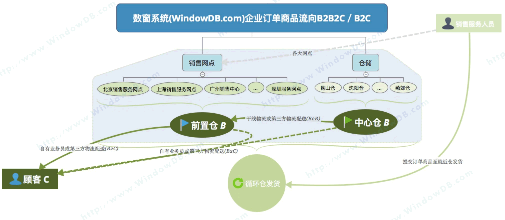

Window DataBase
|
PC终端演示地址
|
RF终端演示地址
让数据，开一扇窗；
为团队，坚定方向。
让工作，不再迷茫；
为企业，插上翅膀！
数窗企业管理信息系统是专门针对中小企业信息化而打造的一款集应用和开发为一体的信息化管理系统。
数窗企业管理信息系统又被称为：数窗企业仓管一体化信息系统、简称：数窗MIS，或者“数窗”，都是指 “WindowDB”；
数窗管理信息系统是专门针对有库房的销售型企业信息化而打造的一款集应用和开发为一体的信息化管理系统。
企业订单商品流向（B2B2C/B2C）

是专门针对现代零售企业，基于专业的仓储管理系统（WMS)基础之上，同时又融合销售、采购；合同；人才的入职、离职；
企业自身项目的需求、问题追踪管理；
以及企业成长过程中累计的经验文档化，提交审核发布最终形成知识库...等等一系列日常经营活动中常用业务的信息管理。
是一套系统化地、综合性的完整解决方案。